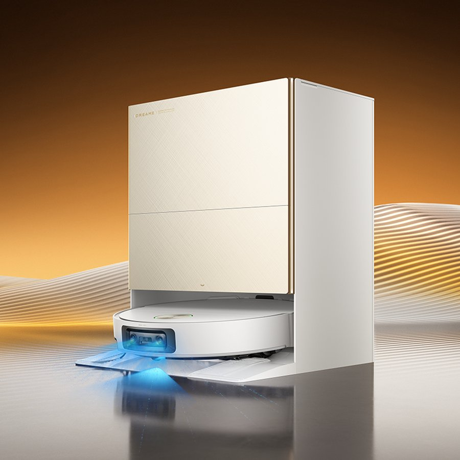
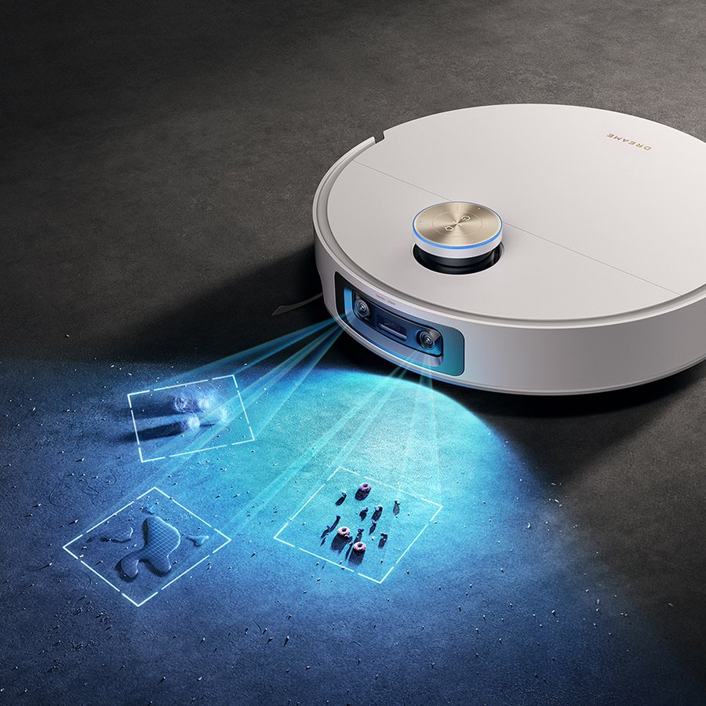
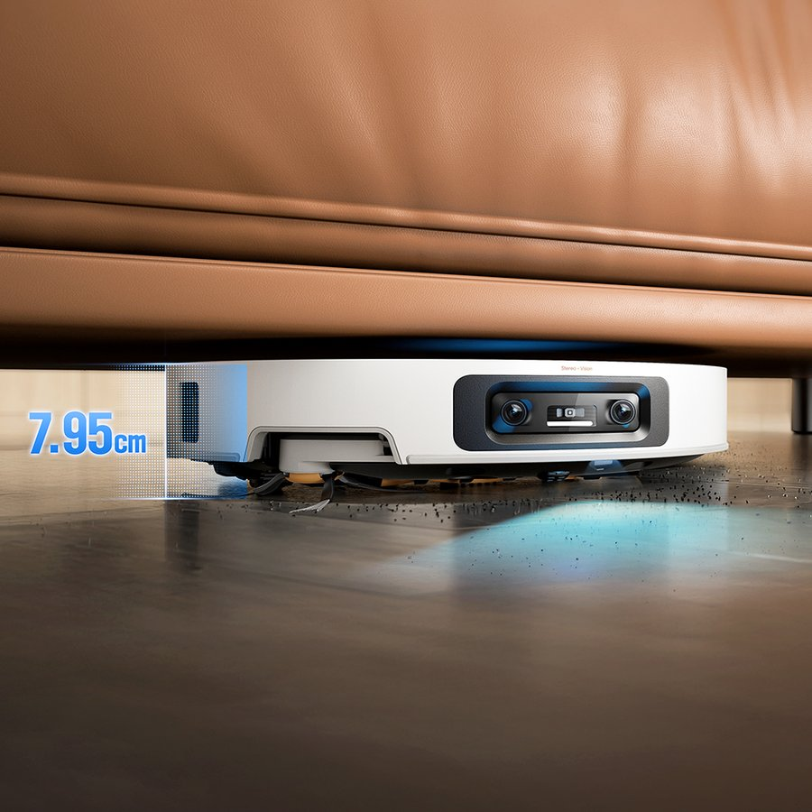
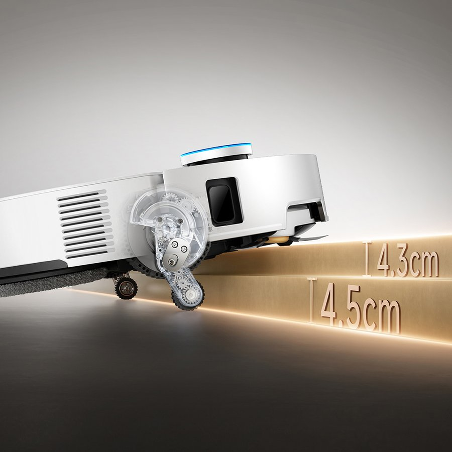
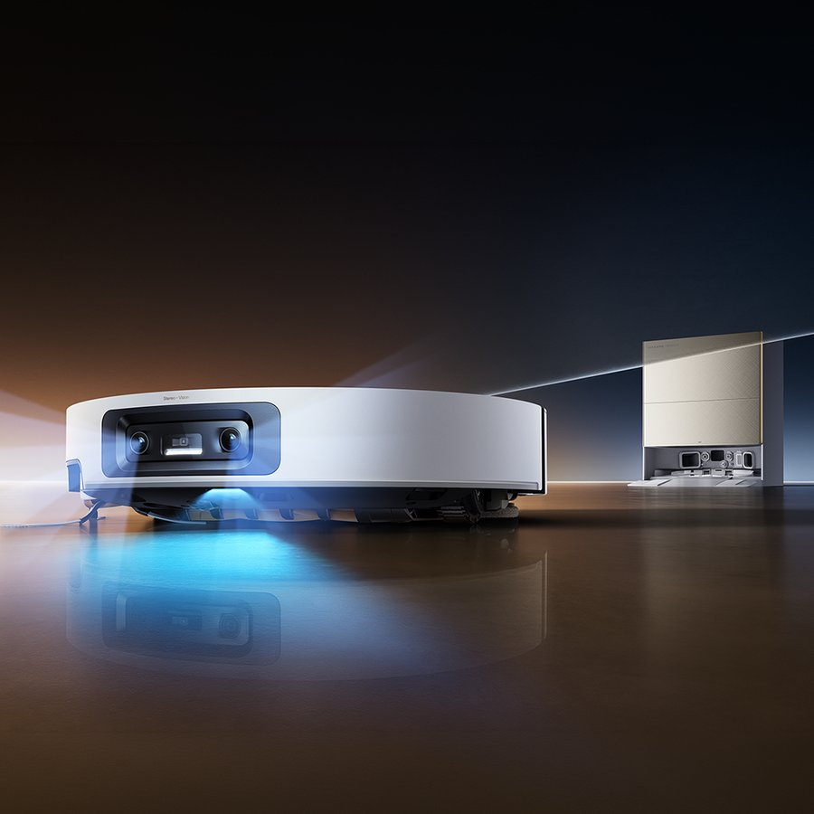

Dreame X60 Ultra Review: Overview
This Dreame X60 Ultra review looks at one of the thinnest flagship robot vacuum and mop combos of 2026. In Korea it is sold through Dreame's official store on Naver; the listing we checked is the standard (water-tank station) version in white, bundled with an accessory kit of spare brushes, filters and mop pads, at 1,060,000 KRW at the time of writing.
Its headline numbers are a 7.95 cm body, 35,000 Pa suction and the ability to climb double-layer thresholds up to 8.8 cm. We checked them against Dreame's Korean and U.S. product pages, Korean launch coverage from March 2026 and Korean retail comparisons to explain what they mean in a real home.
"A robot that slips under low sofas, climbs Korean-style door sills and washes its own mops in hot water."

What You Get: Robot, Dock and Accessory Kit
The X60 is an all-in-one system: the robot docks into a tall base station that empties the dust bin, washes and dries the mops, refills the robot's water tank and stores detergent. You place the dock once against a wall near a socket and leave it there, so you do not need a separate spot for a stick vacuum or mop bucket.
The Korean bundle adds an accessory kit. Robot vacuums go through side brushes, filters, mop pads and dust bags steadily, so having spares in the box means the robot keeps running when a part wears out. The white finish keeps the dock low-key against light floors and walls.

Cleaning: Suction, Mops and Dirt Detection
- 35,000 Pa Vormax suction: Dreame's figure for lifting fine dust and crumbs from floor gaps and carpets.
- HyperStream Detangling DuoBrush 2.0: a twin main brush designed to stop long hair and pet hair from wrapping around the roller.
- Dual rotating mops: 230 RPM with 15 N of downward pressure (Dreame figures); a robotic arm swings a pad outward to reach edges and corners.
- Warm mopping: mop pads are kept at 40 °C or more during cleaning to loosen dried stains and grease.
- Dirt detection: infrared-assisted lighting and an AI blue-light optical scan look for transparent liquids and faint stains, then switch between vacuuming and mopping.
Slim Body, Navigation and Thresholds
The robot reaches 7.95 cm because its VersaLift DToF laser sensor drops into the body when it detects low furniture; with the sensor raised it is about 10.3 cm tall. Navigation pairs the sensor with dual 120° AI cameras and LED lighting to recognise more than 280 object types (Dreame's U.S. figure) such as cables, socks and pet waste.
The ProLeap system uses retractable legs to climb a single step of up to 4.5 cm or a double step of up to 8.8 cm. This matters in Korean apartments, where balcony and bathroom sills can stop ordinary robots and leave whole rooms uncleaned.


Key Specs
| Spec | Dreame X60 Ultra (Korean standard version) |
|---|---|
| Type | Robot vacuum and mop with all-in-one self-cleaning dock |
| Robot height | 7.95 cm with sensor retracted (needs 8.1 cm clearance); about 10.3 cm with sensor raised |
| Robot size / weight | About 350 × 350 mm; about 4.7 kg (U.S. Max Ultra Complete spec) |
| Suction | Up to 35,000 Pa |
| Thresholds | 4.5 cm single step; 8.8 cm double step |
| Mopping | Dual rotating pads, 230 RPM, 15 N, warm pads 40 °C+ |
| Navigation | VersaLift DToF + dual 120° AI cameras + LED |
| Battery | 6,400 mAh (Korean retail spec) |
| Dock | Water tanks about 4.2 L clean / 3.0 L dirty; 100 °C mop wash; warm-air drying; 3.2 L dust bag |
| Dock size | About 390 × 423 × 499 mm |
| Color | White |
| Korean launch | March 9, 2026 (X60 Ultra and X60 Master) |
| Korean price | 1,060,000 KRW on the official Dreame store at time of writing (launch price 1,290,000 KRW) |
Specifications come from Dreame Korea's X60 series page, Dreame's U.S. X60 Max Ultra Complete specification sheet, Korean launch news (ZDNet Korea, etnews, March 9, 2026) and a Korean retail comparison of the Ultra and Master. Suction, temperature and climbing figures are Dreame in-house lab data; we did not lab-test them.

How It Compares
| Dreame X60 Ultra | Dreame X60 Master | Dreame X50 Ultra | |
|---|---|---|---|
| Robot height | 7.95 cm | 7.95 cm | 8.9 cm |
| Suction | 35,000 Pa | 35,000 Pa | 20,000 Pa |
| Thresholds | 8.8 cm double / 4.5 cm single | Same | 6 cm double / 4.2 cm single |
| Station | Water tanks, place anywhere | Plumbed, 24.9 cm tall | Water tanks |
| Korean launch price | 1,290,000 KRW | 1,390,000 KRW | Lower, older model |
| Best for | Most homes, no plumbing work | Under-sink installs, no tank chores | Tighter budgets |
Pros & Cons
| Pros | Cons |
|---|---|
| Very slim body reaches under low sofas and beds | Expensive, even at Korean sale prices |
| Climbs high double sills common in Korean homes | You still refill and empty two water tanks every few days |
| Hot-water mop washing and warm-air drying cut smells | Tall dock (about 50 cm) needs a dedicated wall spot |
| Accessory kit included in the Korean bundle | Ongoing costs: dust bags, pads, detergent |
Who It Suits (and Who Should Skip It)
- Yes: Homes with low furniture where dust collects out of reach.
- Yes: Apartments with raised door or balcony sills between rooms.
- Yes: Pet owners and long-haired households who hate untangling brushes.
- No: Buyers under about 1,000,000 KRW / US$700; older Dreame or Roborock models cost much less.
- No: Small studios with no wall space for a 50 cm-tall dock.
Dreame X60 Ultra FAQ
What is the Dreame X60 Ultra?
It is Dreame's 2026 flagship robot vacuum and mop with an all-in-one base station. It was shown at CES 2026 and launched in Korea on March 9, 2026 as the X60 Ultra (water-tank station) and X60 Master (plumbed station). The robot itself is the same in both versions. In the U.S. the closest model is sold as the X60 Max Ultra Complete.
How thin is it and will it fit under my sofa?
The robot is 7.95 cm (3.13 in) tall with its retractable DToF navigation sensor lowered. Dreame says it needs at least 8.1 cm (3.19 in) of clearance under furniture in that mode, so measure the gap under your sofa or bed before buying.
How high a threshold can it climb?
Dreame rates it at 4.5 cm (1.77 in) for a single step and up to 8.8 cm (3.47 in) for a double-layer step, where the lower step's top surface is at least 23 cm wide. Real results depend on the shape of the threshold.
What is the difference between X60 Ultra and X60 Master?
Only the base station. The Ultra uses a clean-water tank (about 4.2 L) and a dirty-water tank (about 3.0 L) that you refill and empty, so it can stand anywhere near a socket. The Master connects directly to a water supply and drain, which makes the station only 24.9 cm tall but requires plumbing.
Does the dock wash the mops with hot water?
Yes. The dock washes the mop pads with water heated up to 100 °C (212 °F, Dreame's lab figure), dries them with warm air and empties the dust into a 3.2 L bag. During cleaning the pads are kept warm at 40 °C or more.
Dreame X60 Series Robot Vacuums
The Korean X60 Ultra is sold via Dreame's official Naver store. In the U.S., the X60 line is sold as the X60 Max Ultra Complete; compare current Dreame X60 listings on Amazon.